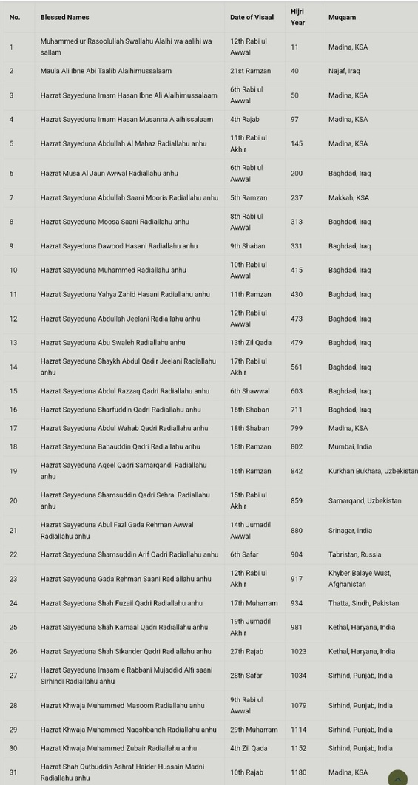

The Sacred Silsila Tree
An unbroken chain of spiritual authority and divine illumination passed from heart to heart through centuries of supreme saints.

1. Sayyiduna Muhammad Mustafa ﷺ
The Seal of Prophethood, the supreme fountain of all esoteric and exoteric guidance.
2. Ameer-ul-Momineen Ali Murtaza (R.A.)
The fountainhead of spiritual transmission for the major Tariqahs of Tasawwuf.
3. Hazrat Khwaja Hasan Basri (R.A.)
The venerable Tabi'i of Basra, master of asceticism and early spiritual masters.
4. Ghaus-ul-Azam Sheikh Abdul Qadir Jilani (R.A.)
The Sultan of all Saints, leader of Silsila-e-Qadiriyyah, Baghdad Sharif (#14).
5. Imam Rabbani Mujaddid Alf Sani (R.A.)
Sheikh Ahmad Sirhindi, reviver of the pure Sunnah and Shariah, Sirhind Sharif (#27).
6. Hazrat Shah Muhammad Basheer Miyan (R.A.)
Born 1859 in Khurasan (Iran), the spiritual guide who bestowed Khilafah in 1936 (#34).
7. Hazrat Qiblah Shah Sharafat Ali Miyan (R.A.)
Patron Saint, founder of Khanqah-e-Sharafatiya (1950) in Shahbad, Bareilly Sharif (#35).
8. Maulana Sufi Shah Shuja'at Ali Miyan & Shah Saqlain Miyan (R.A.)
Blessed successors whose spiritual guidance illuminated the modern era worldwide (#36 & #37).